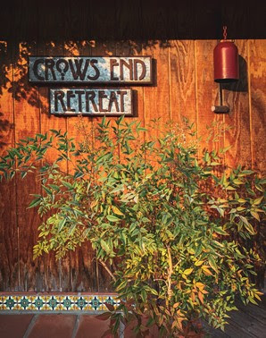

A day of settling, inquiry, and shared silence — a chance to return to the marrow of our practice together. We are preparing a special Spring Zazenkai. Our Head Trainee, Kyōzen (Eduardo), will join Rōshi Shōgen in a retreat that includes the familiar elements of our practice—zazen, kinhin, service, work practice (samu), and meals—while also offering an Introduction to The Work of Byron Katie.
The Inquiry
Between periods of zazen, we will explore Byron Katie’s inquiry method as a way of examining the core beliefs and fixed ideas that generate suffering. Participants will learn to identify and question stressful thoughts, opening to the ways our perspectives about self, others, and the world can obscure compassion and clarity. The Zazenkai container—Great Silence, Maintaining Samadhi—supports the depth of this inquiry.
No prior experience with The Work or with Zen is needed.
A Note from Kyōzen (Eduardo)
I began Zen practice in 1995 and have been practicing The Work since 2004. Over time the two have blended and now feel like one practice to me. The Work helps me see that everything I ever wanted I already have — that what I am without my story is kind, generous, patient, hilarious, and does not need anything other than what it has in any given moment.
“[W]hat Byron Katie teaches is pure dharma. Her Work is Manjusri’s delusion-cutting sword, and she uses it fearlessly, relentlessly, and with utmost generosity.”
Bernie Glassman Rōshi
“The Work has striking similarities with the Zen koan and the Socratic dialogue.”
Stephen Mitchell
A note from Rōshi Shōgen: “I have personally experienced this upaya (skillful means) and found it powerful, intimate, and deeply resonant with Zen practice. I look forward to practicing with you in this unique way.”
Registration
$50 for in-person participation
The SLOZC policy is to turn no one away for lack of funds. If you have concerns about payment, please contact Geoff Kanjō O’Quest at geoff.oquest@gmail.com.
For any other questions, please contact Rōshi Shōgen at shogen@slozc.org.
To register for the zazenkai, please contact Rōshi Shōgen at shogen@slozc.org.
Whether you sit in a Zen tradition or come from another contemplative path (or no path), you are welcome to come together for The Work and Zazen.